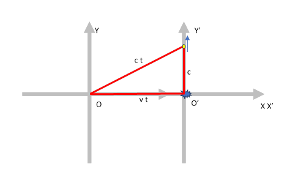

洛伦兹变换的简单推导
前言
网上有很多用光钟来解释时间膨胀的科普文章,非常简明易懂.借助一点三角形的几何学,很容易明白\[\sqrt{c^2-v^2}\]是怎么来的. 但是洛伦兹变换,尤其是其中的系数: \[-v \over c \sqrt{c^2-v^2}\] 并不是那么轻易就得出来的. 于是在网上找洛伦兹变换的推导方法,要么是从特别高大上抽象的数学语言解释,要么像爱因斯坦《浅说》中那样用初等数学但是有些晦涩的繁琐的得出（说实话我目前仍然没有看懂）. 于是自己试了一下,用尽可能简明的步骤推导出这个变换.当然我的推导是假设线性变换（符合直觉）的情况下,没有包含 “为什么变换是线性的”的证明.
数学表述
设有两个参考系S和S', 其中S'沿X轴相对S以速度v运动. 在时刻0, 它们的原点重合. 两个参考系的事件坐标分别表示为(x, t)和(x', t').我们是想求出如下变换 \[\begin{pmatrix} x' \\ t' \end{pmatrix} = \begin{pmatrix} a1&&a2\\a3&&a4 \end{pmatrix} \begin{pmatrix} x \\ t \end{pmatrix} \] (即矩阵中的四个元素的值).
这个变换要满足一个条件：在不同参考系中光速保持不变.
求解
我们用待定系数法求解,也就是说找到一些简单情况下的x, x', t, t'的值,代入方程,解出a1-a4.
假设在时刻0,也就是O和O'重合的时候,从S'的原点O'发出一个光子,沿Y轴向上运行一秒,光源爆炸.如下图所示.

取爆炸的光源为事件. 这个事件在S'中的坐标为(0, 1). 在S参考系中, 爆炸点,光子,和坐标原点组成一个三角形.
- 三角形竖边的长度: 和S'中的长度一样 (因为S'在竖直方向并没有速度) ==> c
- 三角形斜边的长度: 在S参考系看来,光子沿这个斜边走了t时间到达的那个位置 ==> ct
- 三角形横边的长度: 即在S中看到的OO'的距离 ==> vt
解得\[t = {c \over \sqrt{c^2 - v^2}}\], 我们据此得到了一组对应关系: \[\begin{cases} x & = & cv \over \sqrt{c^2 - v^2} \\ t & = & v \over \sqrt{c^2 - v^2} \\ x' & = & 0 \\ t' & = & 1 \end{cases}\]
类似的,考虑在S的原点发出一个光子的类似问题,我们得到另一组关系（由于运动的相对性,结果必然是对称的,只是横坐标差一个正负号）： \[\begin{cases} x & = & 0 \\ t & = & 1 \\ x' & = & - cv \over \sqrt{c^2 - v^2} \\ t' & = & v \over \sqrt{c^2 - v^2} \end{cases}\] 把以上两组关系代入待求解的变换式,我们得到了下面的方程：
\begin{cases} \begin{pmatrix} 0 \\ 1 \end{pmatrix} & = & \begin{pmatrix} a1&&a2\\a3&&a4 \end{pmatrix} \begin{pmatrix} cv \over \sqrt{c^2 - v^2} \\ v \over \sqrt{c^2 - v^2} \end{pmatrix} \\ \begin{pmatrix} - cv \over \sqrt{c^2 - v^2} \\ v \over \sqrt{c^2 - v^2} \end{pmatrix} & = & \begin{pmatrix} a1&&a2\\a3&&a4 \end{pmatrix} \begin{pmatrix} 0 \\ 1 \end{pmatrix} \end{cases}解得洛伦兹变换：
\[\begin{pmatrix} x' \\ t' \end{pmatrix} = \begin{pmatrix} c \over \sqrt{c^2 - v^2} && - cv \over \sqrt{c^2 - v^2} \\ -v \over c \sqrt{c^2 - v^2} && c \over \sqrt{c^2 - v^2} \end{pmatrix} \begin{pmatrix} x \\ t \end{pmatrix}\]